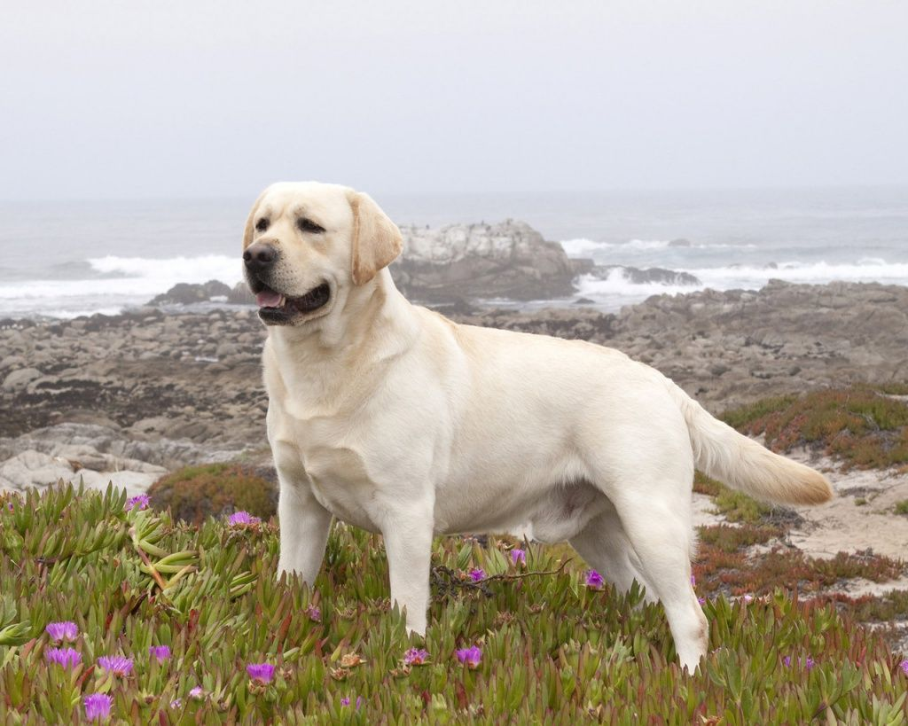

Рост - до 57 см
Вес - от 25 до 30 кг
Продолжительность жизни - от 10 до 12 лет

Лабрадоры — это крупные, сильные собаки с крепким телосложением. Порода появилась на побережье Ньюфаундленда в XVII веке
Этих собак обучали приносить рыболовные сети из ледяной воды.Это дружелюбные, добрые собаки, любящие всех и каждого.